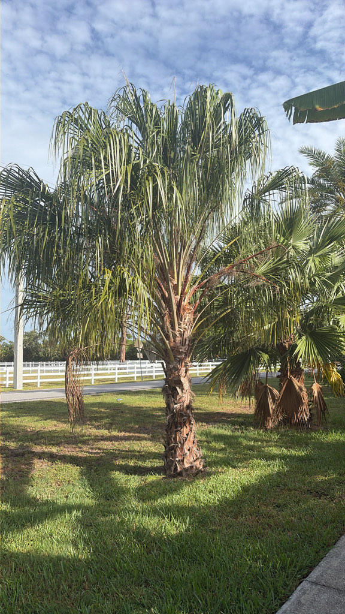

- The drooping ribbon-like leaflet tips are not just ornamental — they are what sets this palm apart from its close relative the Australian Fan Palm (Livistona australis), which holds its frond segments stiffly upright. Where the two overlap in the wild, the weeping tips are the quickest field mark.
- For most of the 20th century this palm was sold and classified as Livistona decipiens — and that name is a clue to its own story. Decipiens is Latin for 'deceiving' or 'deceptive,' a name applied after the palm was discovered to have been misidentified and grown in France as an entirely different plant. The name stuck for over a century before botanists corrected the record in 2004.
- Livistona decora does not appear on any confirmed host list for Lethal Bronzing Disease — the phytoplasma infection devastating Phoenix palms and other species across Florida. Its close relative the Chinese Fan Palm (Livistona chinensis) is a confirmed LBD host, making L. decora a notably safer choice when replanting sites where susceptible palms have been lost.
- The inflorescences can reach up to about 11 feet long — longer than most of the fronds above them. They hang in great arching sprays below the crown and produce clusters of shiny black fruit roughly half an inch across.
Livistona decora is endemic to eastern coastal Queensland, Australia, occurring from Magnetic Island near Townsville in the north to Rainbow Beach in the south — a coastal strip of roughly 700 miles.
Within that range it grows in a surprising variety of habitats: littoral rainforests, dry rainforest margins, open sclerophyll woodlands, coastal swamps, beach dunes, and riparian zones along permanent streams.
It has been in cultivation well beyond Australia for decades and is now a standard ornamental throughout warm subtropical and tropical regions worldwide, including throughout Florida, where it is valued for its drought tolerance once established and its tolerance of coastal conditions. UF/IFAS lists the genus Livistona among its low-maintenance South Florida palm recommendations.
- Livistona decora is native to coastal Queensland, where it grows in habitats ranging from littoral rainforest and coastal swamps to open sclerophyll woodland. Its costapalmate fronds — fan-shaped but with a central rib that gives the whole leaf a gentle curve — split into dozens of slender segments whose tips droop in long, weeping streamers.
- In a breeze, the effect is unmistakable: a rustling green fountain.
- The palm carries a name with a story inside it. For most of the 20th century it was known as Livistona decipiens, a name the Italian botanist Odoardo Beccari gave it — decipiens being Latin for 'deceiving' or 'deceptive.' UF/IFAS notes that the epithet was applied after the palm was discovered to have been misidentified and cultivated in France as an entirely different species. In 2004, J. L.
- Dowe restored the older name Livistona decora, published in 1887, which had priority under botanical rules.
- For Florida gardeners, one of this palm's most practically important qualities is its absence from the confirmed host list for Lethal Bronzing Disease (LBD), the phytoplasma infection that has killed tens of thousands of palms statewide. Notably, its close relative Livistona chinensis (Chinese Fan Palm) is a confirmed LBD host, identified by UF/IFAS researchers.
- Livistona decora is routinely recommended by landscape professionals as a replacement species on sites where susceptible palms — Phoenix species, queen palms, Christmas palms — have been lost.
- The genus Livistona was established in 1810 by Scottish botanist Robert Brown, who named it to honor Patrick Murray, Baron of Livingston. Murray's extensive personal plant collection, assembled in the late 1600s, formed the nucleus of the botanical garden in Edinburgh — one of Europe's earliest.
- The genus now spans roughly 28 accepted species ranging from the Horn of Africa across southern and eastern Asia to Australia.
The long drooping inflorescences attract bees and other pollinating insects when in bloom. Female trees that set fruit produce shiny black drupes roughly half an inch across, and these are taken by birds — the primary way the seeds move any distance from the parent tree.
Because Livistona decora has no co-evolutionary history with Florida's native fauna, its role here as a wildlife plant is modest compared with the park's native species. Visitors looking for the park's most active butterfly and pollinator habitat will find it among the native plantings nearby.
Propagation is by seed only. The palm is functionally dioecious: each individual behaves as either male or female in practice, even though the flowers are technically bisexual. Only female-functioning trees produce fruit, and only when a pollen source is nearby.
Inflorescences are dramatically long — up to about 11 feet — and hang in arching sprays below the crown. Flowers are small and yellow, borne on much-branched stalks.
Shiny black, roughly spherical drupes about one-half to five-eighths of an inch (12–16 mm) in diameter, each containing a single seed. Fruit clusters can be substantial and are attractive to birds.
Costapalmate — the frond is fan-shaped overall, but a central rib (the costa) runs from the petiole into the blade, giving the whole frond a slight curvature rather than lying completely flat. The frond segments are numerous and notably thin; their tips droop in long, ribbon-like streamers that give the palm its common name. Petioles are armed with stiff black spines along the margins.
Solitary, slender, and smooth compared with many fan palms — one of the field marks separating it from the related Australian Fan Palm. The trunk is ringed with clean, evenly spaced leaf-base scars. Trunk diameter at maturity is roughly 10 to 12 inches.
Start with the frond tips: rather than ending in stiff, upward-pointing segments like most fan palms, the leaflets of this species droop in long, hanging ribbons — the most distinctive thing about the tree at any age.
Next, look closely at the petioles (the stems connecting each frond to the trunk): they are lined with prominent, dark, hook-like teeth that closely resemble the blade of a bow saw — treat them with the same respect. If the tree is in fruit, scan for hanging clusters of small shiny black drupes below the crown; ripe fruit is roughly half an inch across.
Finally, compare the trunk to other fan palms nearby — Livistona decora has a notably smooth, clean stem with neat horizontal rings where old fronds have fallen.
The petioles are armed with prominent, dark, hook-like teeth — palm growers often compare them to the blade of a bow saw — and they can inflict deep cuts or puncture wounds on skin. Use heavy leather gloves and eye protection when pruning or handling fallen fronds, and keep curious pets away from the frond margins.
The shiny black fruit is visually appealing but is not a food source; Livistona palms as a group are considered non-toxic to people, dogs, and cats, so aside from the very real physical hazard of the spines, this palm is otherwise harmless.
Livistona decora is still widely sold and labeled in the nursery trade under its older name, Livistona decipiens. The two names refer to the same plant; decipiens was formally replaced by decora in 2004 when J. L. Dowe restored an earlier published name that had priority.
Visitors may see either name on plant labels — both are correct in a practical sense, though decora is the currently accepted designation.
In the southern part of its Queensland range, Livistona decora can be confused with the Australian Fan Palm (Livistona australis). The two key differences: Livistona decora has a smoother trunk and distinctly drooping frond-tip segments, while Livistona australis holds its frond segments more rigidly. In Florida, the drooping ribbon effect is usually the quickest way to identify this species.


- © Ruby Meador (CC-BY-NC), via iNaturalist